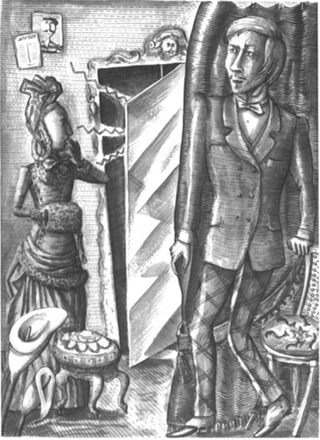
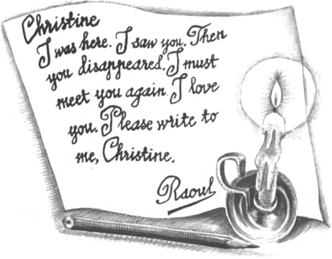
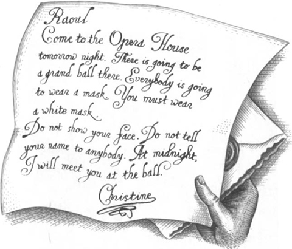

5

Chiếc Gương Trong Phòng Thay Đồ
Một tuần trôi qua sau sự cố ở Hộp số 5. Raoul không gặp được Christine. Cô cũng không hát ở Nhà hát Opera.
Chàng trai trẻ không vui. Đêm nào anh cũng trằn trọc không ngủ được. Anh đã yêu Christine! Anh muốn gặp Christine. Anh lo lắng cho cô. Cô ấy bị chuyện gì thế? Cô ấy có bị ốm không? Và ai là người bạn bí ẩn của Christine? Người đàn ông trong phòng thay đồ là ai? Người đàn ông đó có giọng nói nhưng không có thân hình! Raoul cũng muốn gặp anh ta!
Một buổi chiều nọ, Raoul lại đến Nhà hát Opera. Anh hỏi một trong số các ca sĩ về Christine.
'Christine hiện không có ở đây,' người ca sĩ nói. 'Nhưng cô ấy sẽ sớm đến thôi.'
'Tôi sẽ đợi cô ấy,' Raoul nói.
Anh đi đến phòng thay đồ của Christine. Cửa không khóa. Anh mở cửa và bước vào phòng.
Chàng trai trẻ ngồi xuống ghế, ở một góc phòng. Anh đợi Christine.
Mười phút sau, cánh cửa mở ra. Christine bước vào phòng thay đồ. Cô đóng cửa lại đằng sau mình. Raoul nhìn cô. Lại một lần nữa, cô ca sĩ trẻ không nhìn thấy anh. Cô nhìn vào một chiếc gương lớn trên tường phòng thay đồ. Raoul định lên tiếng.
Nhưng đột nhiên, giọng nói của một người đàn ông khác vang lên.
'Christine! Christine! Hãy hát cho ta nghe,' giọng nói đó nói. Giọng nói phát ra từ chiếc gương! Và Raoul đã từng nghe giọng nói đó trước đây. Anh đã nghe thấy nó vọng qua cánh cửa phòng thay đồ!

Raoul nhìn vào chiếc gương lớn trên tường. Anh không hiểu chuyện gì đang xảy ra.
Christine bắt đầu cất tiếng hát. Cô hát khẽ khàng. Cô từ từ bước tới chiếc gương. Đột nhiên, có tiếng gõ cửa phòng thay đồ. Có ai đó đang đứng ngoài hành lang. Raoul quay đầu lại. Chàng trai trẻ nhìn cánh cửa một lúc. Rồi anh lại nhìn vào chiếc gương. Nhưng Christine đã biến mất!
Raoul đứng dậy chạy đến bên chiếc gương. Anh chạm vào mặt kính. Đó là một tấm gương nặng. Nó được cố định trên tường.
'Christine ở đâu?' anh nghĩ. 'Mình phải làm gì bây giờ?'
Raoul nhìn thấy một vài tờ giấy và một cây bút chì trên bàn của Christine. Anh nhanh chóng viết một tin nhắn.

Chàng trai trẻ đặt tin nhắn lên bàn Christine. Rồi anh quay lại nhà anh trai mình. Raoul buồn bã lắm. Đêm đó, anh không ngủ được. Anh nghĩ về Christine. Cô ấy ở đâu nhỉ? Liệu cô ấy có đọc được tin nhắn của mình không?
Sáng hôm sau, Raoul nhận được một lá thư. Đó là thư của Christine! Raoul vội vàng mở ra.

Buổi chiều, Raoul đến một cửa hàng gần Nhà hát Opera. Anh mua một chiếc áo choàng đen và một chiếc mặt nạ trắng. Đây sẽ là trang phục dự vũ hội hóa trang của anh.
Mục lục
- Tiêu đề
- Mục lục
- Ghi chú về Tác giả
- Ghi chú về Câu chuyện Này
- Nhân vật trong Câu chuyện Này
- 1 Thiên thần Âm nhạc
- 2 Tiệc ở Nhà hát Opera
- 3 Raoul đến Nhà hát Opera
- 4 Phòng số 5
- 5 Gương ở Phòng thay đồ
- 6 Vũ hội Hoá trang
- 7 Câu chuyện của người Ba Tư
- 8 Christine Biến mất!
- 9 Dưới Nhà hát Opera
- 10 Hồ và Cây
- 11 Bóng ma Nhà hát Opera
- Bản quyền